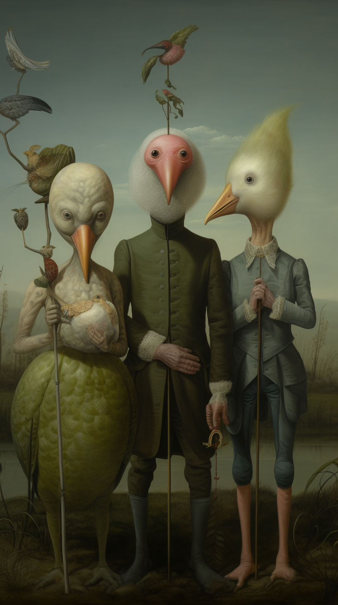
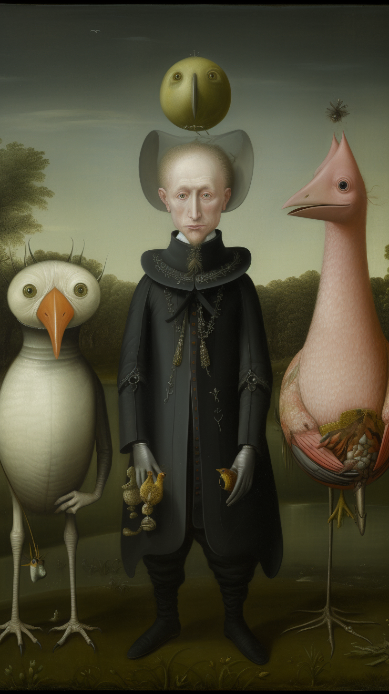
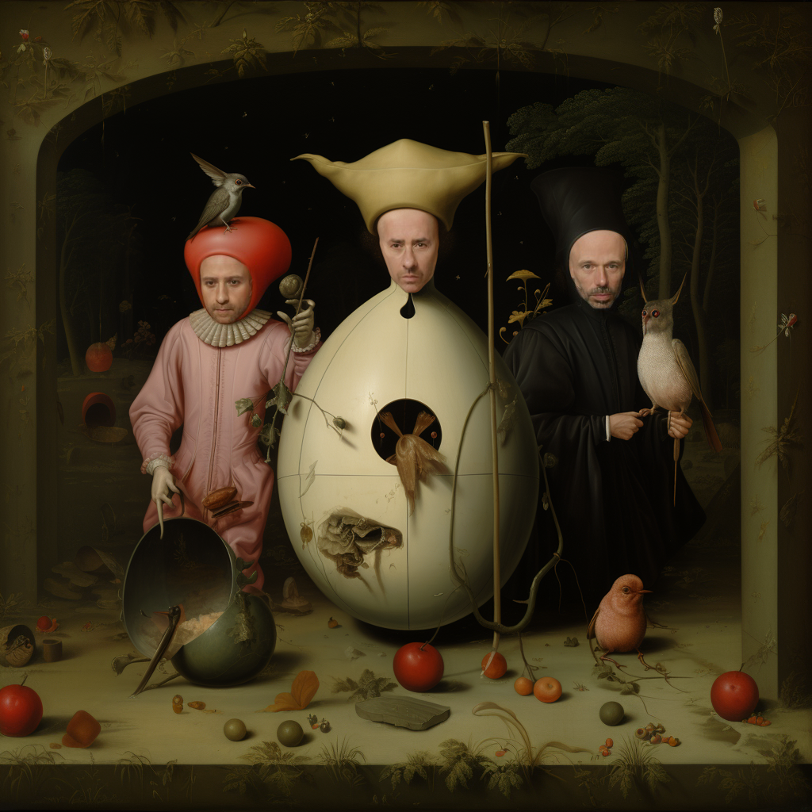
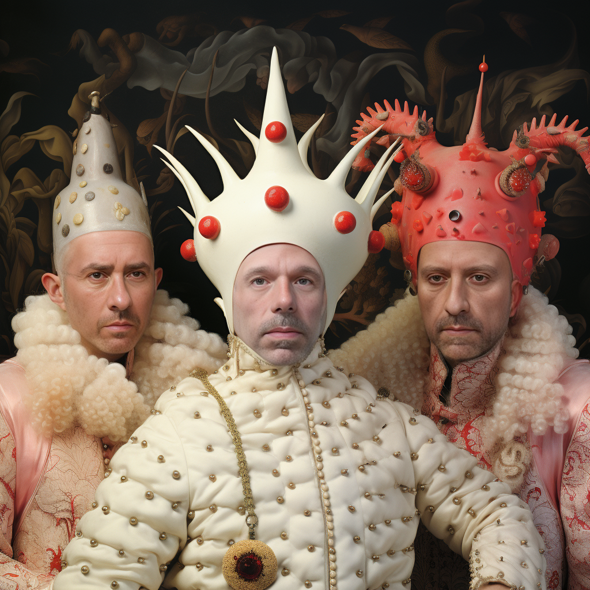
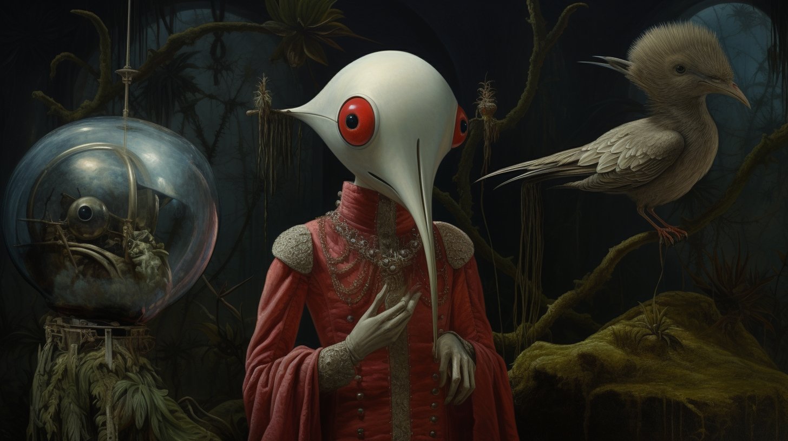
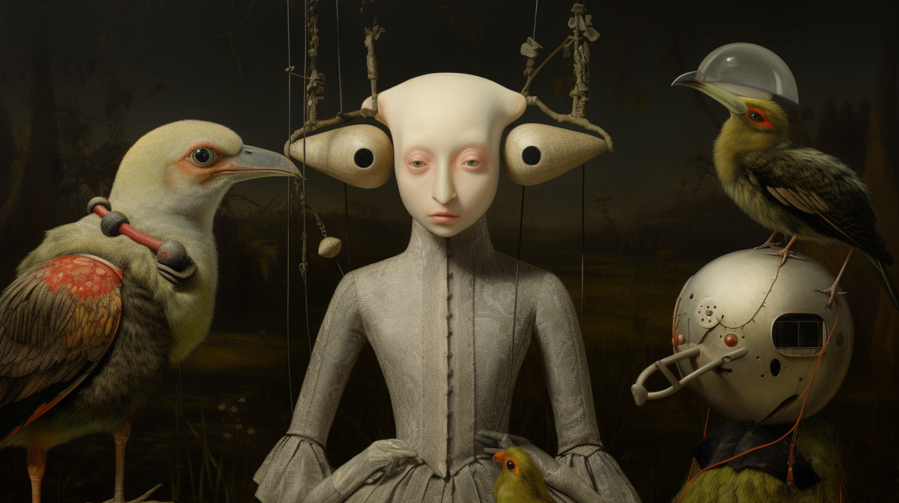
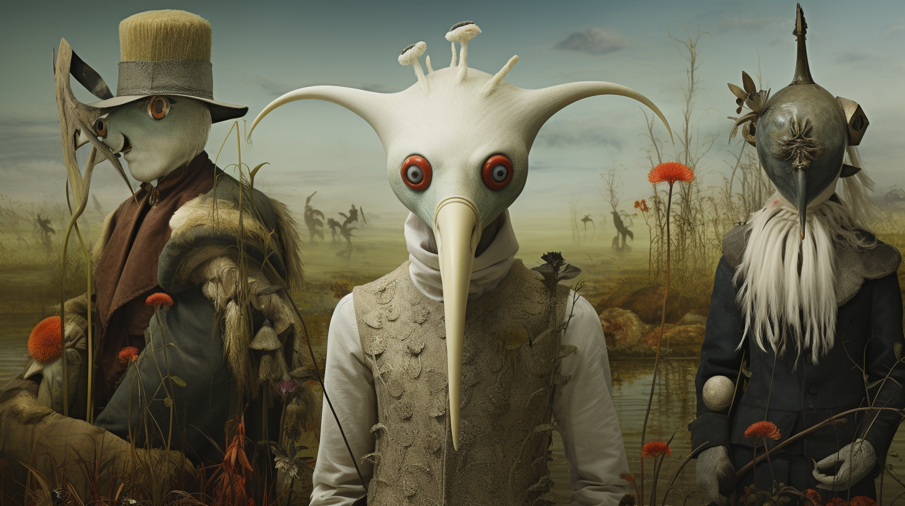
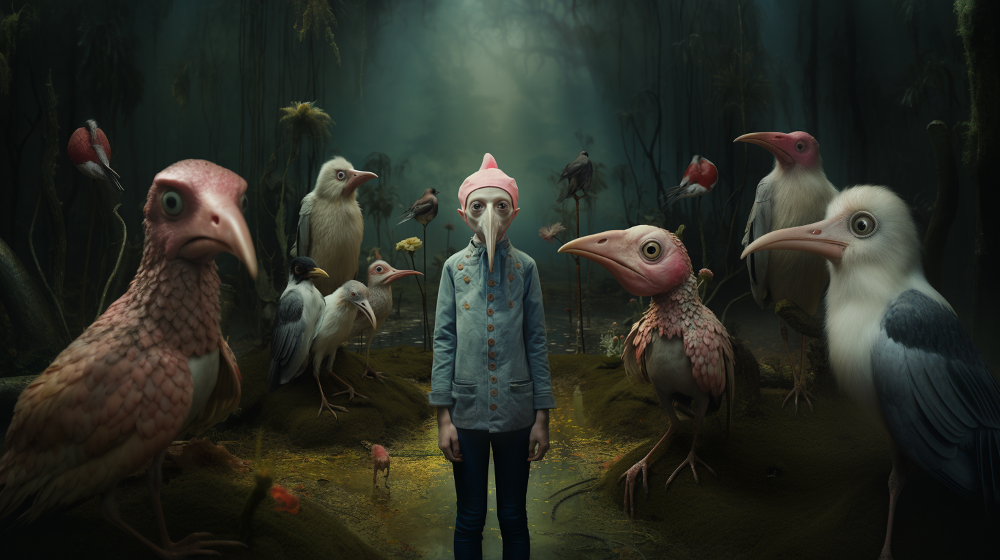
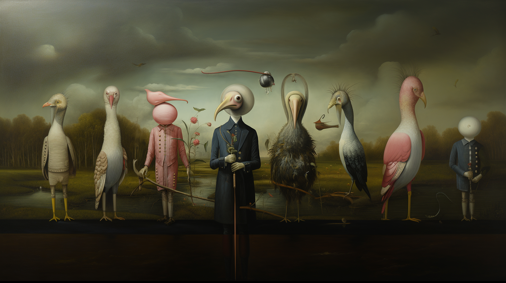

Katfish approached this project with a finished track and no visual language yet defined. Rather than illustrate the lyrics directly, I directed the video's visual identity around the track's mood: frame composition, color treatment and motion pacing designed to reflect the tone of the song rather than narrate it literally.
The final cut combines generative motion elements with directed footage, using texture and contrast to unify the sequence into one continuous atmosphere rather than a series of scenes cut to the beat. The project reinforced motion and color direction as tools for conveying mood independent of narrative content.

Frame 02

Frame 04

Visual development: Trio portrait 02

Visual development: Trio portrait 04

Character study: Female lead 01

Character study: Female lead 02

Character study: Male lead

Character study: Kid character

Character study: Full cast